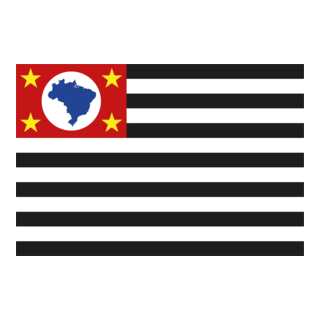
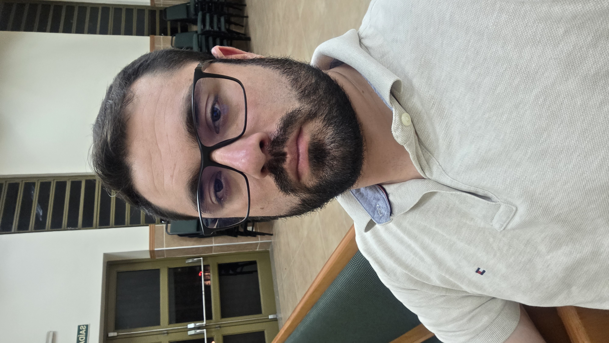

Vinicius Chuman
Sobre mim
Meu nome é Vinicius Chuman. Sou de São Paulo, SP, e atualmente trabalho como estagiário de T.I. (Suporte) em um colégio judaico. Sou casado e tenho 32 anos, e uma filha a caminho. Gosto de praticar esportes, jogar video game, acompanhar filmes e me aprofundar em tecnologia — incluindo programação e desenvolvimento web.
São Paulo, Brasil

São Paulo é o estado mais populoso do Brasil, principal centro financeiro e cultural do país, conhecido por sua diversidade e intensa vida urbana.
